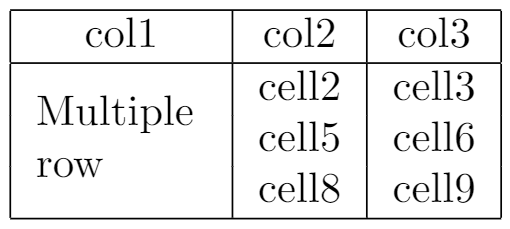
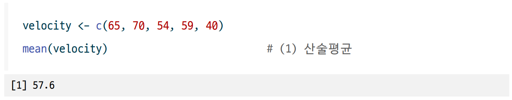
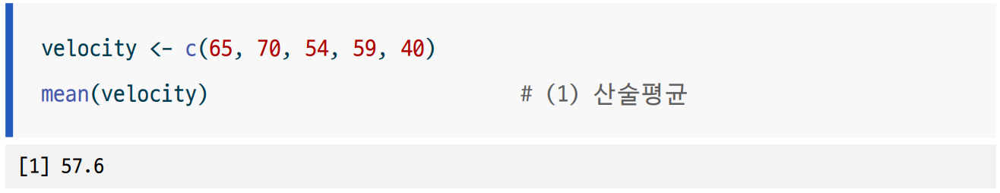

다음 [@tbl-image]처럼 이미지화된 표를 테이블로 인식시킬 수 있습니다.
::: {#tbl-image}
{fig-pos='!ht' fig-align="center" width=50%}
테이블 이미지의 표로 출력
:::3 bitPublish 사용 팁
이 장에서는 `bitPublish’을 응용하여 다소 복잡한 기능을 구현하는 팁을 제시합니다.
3.1 서식에 관련된 팁
3.1.1 그림을 표로 인식시키고, 표의 label을 활용
경우에 따라서 복잡한 표를 LaTeX로 작성하는 것이 어려울 수 있습니다. 이때 표를 파워포인트나 그림으로 작성하고, 그림을 표로 인식시키는 방법을 사용할 수 있습니다.
다음 예제처럼 그림을 표로 인식시키고, 표의 label을 활용하여 표의 cross-reference를 적용할 수 있습니다.
다음 표 3.1처럼 이미지화된 표를 테이블로 인식시킬 수 있습니다.

3.1.2 문서 내 인용 하이퍼 링크 제거
문서 내 인용을 하이퍼 링크로 제공하는 것이 기본 설정이지만, 이를 제거하고 싶을 때가 있습니다.
예를 들어서 생성된 문서를 인쇄할 경우에 하이퍼 링크가 파란색으로 출력되는 것을 방지하고 싶을 때가 있습니다. pdf 파일로 배포할 경우에는 하이퍼 링크가 필요하지만, 단행본 출판을 위해서 인쇄 목적의 출력을 위해서는 하이퍼 링크를 제거하는 것이 좋습니다.
이때 다음과 같이 설정을 변경할 수 있습니다.
_quarto.yml 파일에 다음과 같은 hyperrefoptions 설정을 추가합니다.
hyperrefoptions: draft다음은 bitPublist로 생성된 문서의 인용을 하이퍼 링크로 제공하는 것을 방지하는 _quarto.yml 파일 예제입니다. 만약 하이퍼 링크를 제공하고 싶다면 hyperrefoptions: draft를 제거하면 됩니다.
project:
type: book
output-dir: docs
lang: ko-KR
book:
title: "bitPublish를 이용하여 한글 책 조판하기"
chapters:
- index.qmd
- chap_exams.qmd
- chap_intro_bitpublish.qmd
- chap_tips.qmd
- chap_troubleshooting.qmd
- chap_version.qmd
- chap_solve_exercise.qmd
cover-image: hexlogo/bitPublish_logo.png
bibliography: references.bib
link-citations: false
hyperrefoptions: draft3.1.3 코드 블록의 배경색 설정
다음의 코드 블록이 실행되면 어떻게 출력되는지 확인해보세요.
velocity <- c(65, 70, 54, 59, 40)
mean(velocity) # (1) 산술평균Quarto로 생성한 문서의 코드 블록의 기본 출력은 그림 3.1같이 출력됩니다.

그런데 이 블록의 경우, 배경색이 흐려서 일반 프린터 출력 시 잘 보이지 않아 본문에서 구분이 잘 안될 수도 있습니다. 이처럼 코드 블록의 배경색을 설정하고 싶을 때가 있습니다. 이때 다음과 같이 설정을 변경할 수 있습니다.
_quarto.yml 파일에 다음과 같은 옵션을 기술합니다.
- code-block-border-left
- 코드블록의 왼쪽 테두리 색상을 지정합니다.
- 기본값은 true로 밝은 회색을 테두리를 생성합니다.
- RGB 색상 이름을 지정해서 테두리의 색상을 지정할 수 있습니다.
- code-block-bg
- 코드블록의 배경색을 지정합니다.
- 설정하지 않으면 배경색을 출력하지 않습니다.
- true를 지정하면 html에서는 “#F0F3F5” 색상으로 출력되지만,
- pdf에서는 색상이 출력되지 않습니다.
- RGB 색상 이름을 지정해서 배경색을 지정할 수 있습니다.
다음은 bitPublist로 생성된 문서의 코드 블록의 색상을 지정하는 _quarto.yml 파일 예제입니다.
project:
type: book
output-dir: docs
lang: ko-KR
book:
title: "bitPublish를 이용하여 한글 책 조판하기"
chapters:
- index.qmd
- chap_exams.qmd
- chap_intro_bitpublish.qmd
- chap_tips.qmd
- chap_troubleshooting.qmd
- chap_version.qmd
- chap_solve_exercise.qmd
cover-image: hexlogo/bitPublish_logo.png
bibliography: references.bib
link-citations: false
code-block-border-left: "#245ABE"
code-block-bg: "#f8f8f8"수정한 _quarto.yml 파일로 생성한 문서의 코드 블록은 그림 3.2같이 출력됩니다.

3.1.4 소제목의 색상 변경하기
소제목인 section과 subsection의 색상을 변경하고 싶을 때가 있습니다. 이때 다음과 같이 설정을 변경할 수 있습니다.
_extension/bit2r/bitPublish/bitPublish.tex 파일에 다음과 같은 컬러 정의 부분이 있습니다. colsec과 colsub이 RGB 값으로 검정색인 000000으로 설정되어 있습니다. 이 부분을 원하는 색상으로 변경하면 됩니다. 만약 blue로 변경하고 싶다면 colsec과 colsub을 0000FF로 변경하면 됩니다.
%%==============================================================================
%% 컬러 정의
%%==============================================================================
\definecolor{gray95}{gray}{.95}
\definecolor{gray85}{gray}{.85}
\definecolor{aliceblue}{rgb}{0.94, 0.97, 1.0}
\definecolor{ExerciseColor}{gray}{0.65} % for example
\definecolor{problemblue}{RGB}{100, 134, 158} % for 시각화전략
\definecolor{light}{HTML}{E6E6FA}
\definecolor{highlight}{HTML}{800080}
\definecolor{dark}{HTML}{330033}
\definecolor{cornflowerblue}{rgb}{0.39, 0.58, 0.93} % for Exercise
\definecolor{colsec}{HTML}{000000} % for Section
\definecolor{colsub}{HTML}{000000} % for Subsection
%%==============================================================================
%% 절(section)과 서브절(subsection) 타이틀을 돋움체(sans-serif)로 바꾸기
%%==============================================================================
%% Rmarkdown과 titlesec 패키지가 호환되지 않는 이슈가 있음.
%% 아래 두줄의 명령을 입력하지 않으면 에러가 발생함
%% 문제의 원인:
%% https://stackoverflow.com/questions/40439701/cant-knit-to-pdf-with-custom-styles
%% 문제의 해결
%% https://github.com/rstudio/bookdown/issues/677
\let\paragraph\oldparagraph
\let\subparagraph\oldsubparagraph
\usepackage{titlesec}
\titleformat{\section}
{\color{colsec}\sffamily\selectfont\Large\bfseries}{\thesection}{1em}{}
\titleformat{\subsection}
{\color{colsub}\sffamily\selectfont\large\bfseries}{\thesubsection}{1em}{}